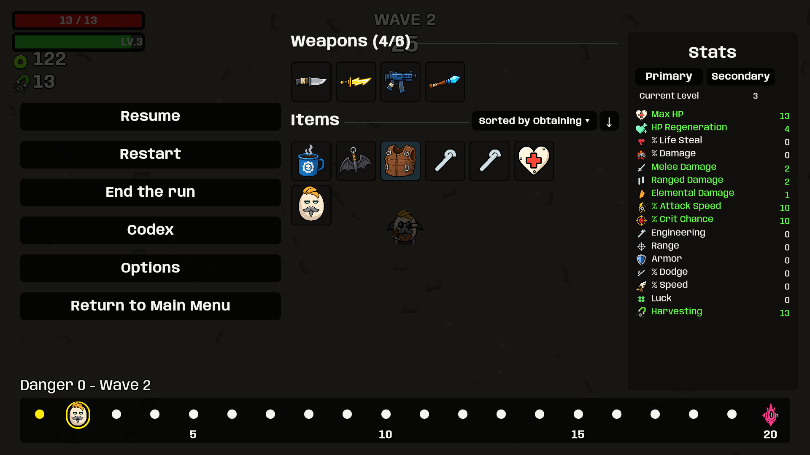
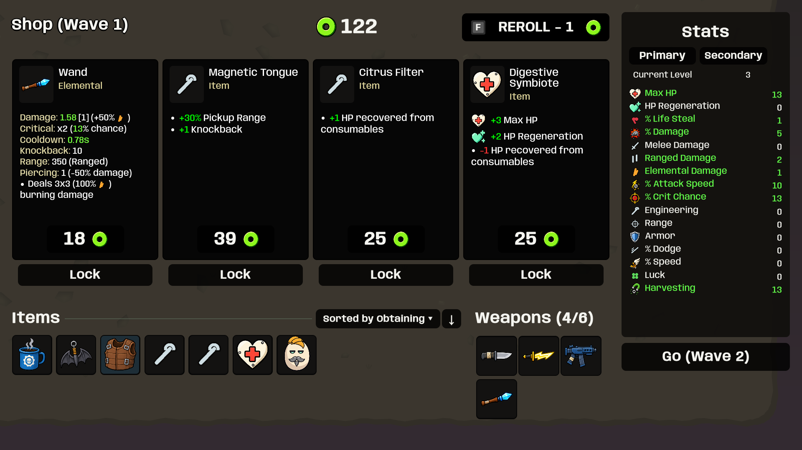
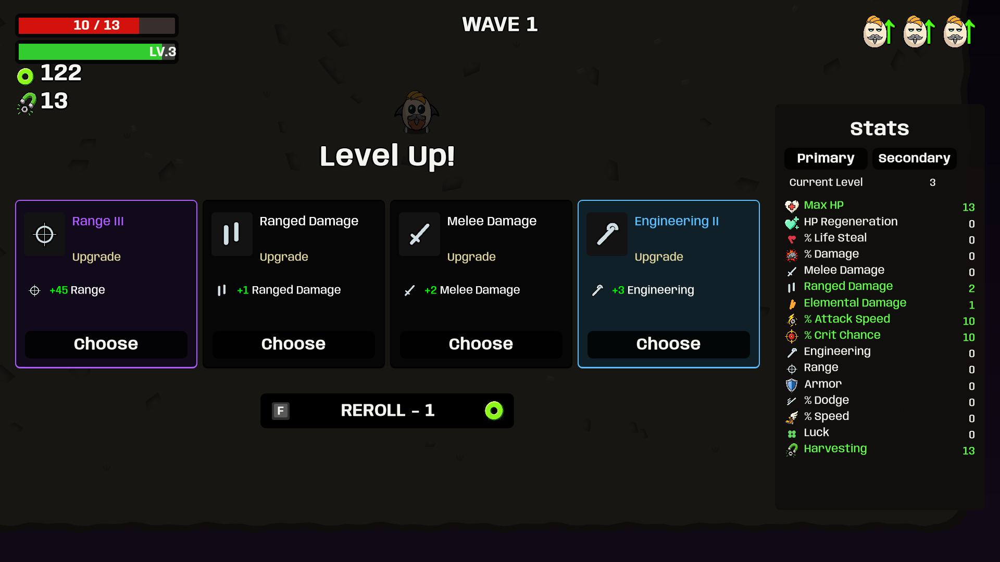
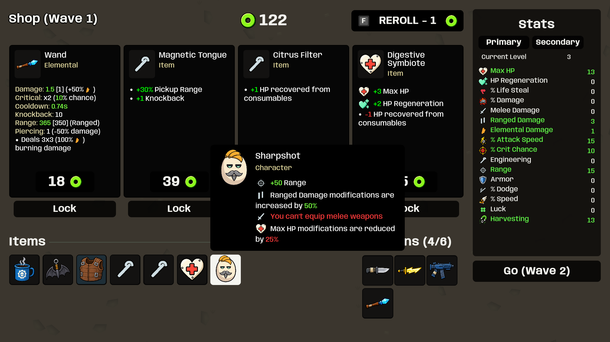
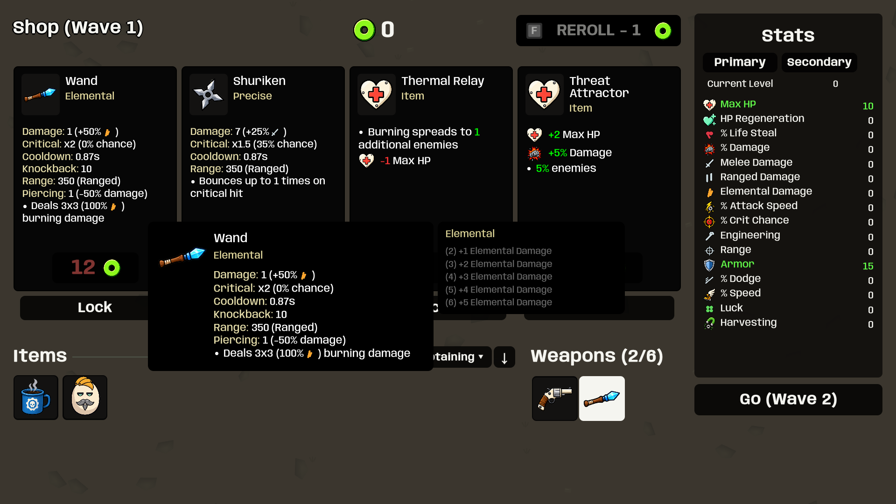
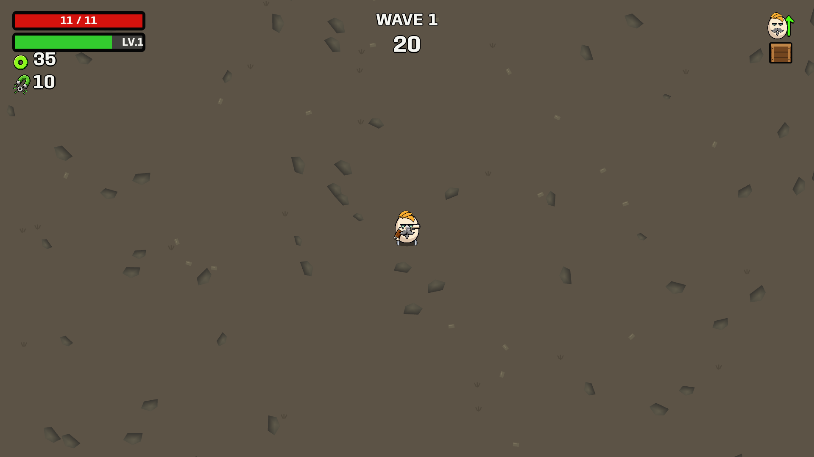
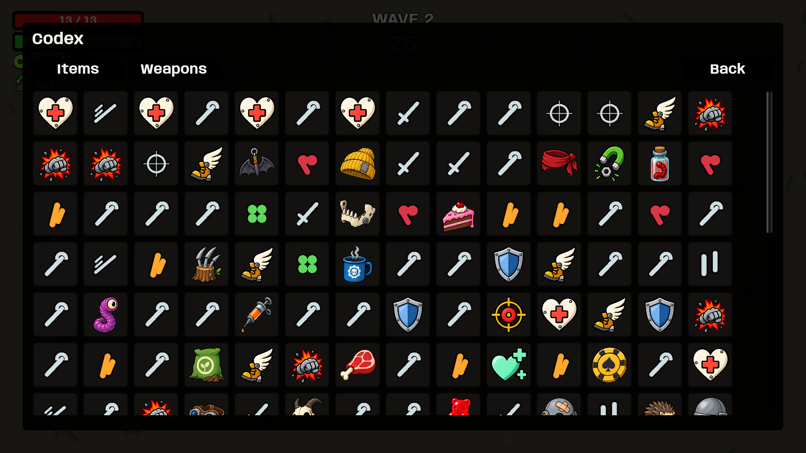
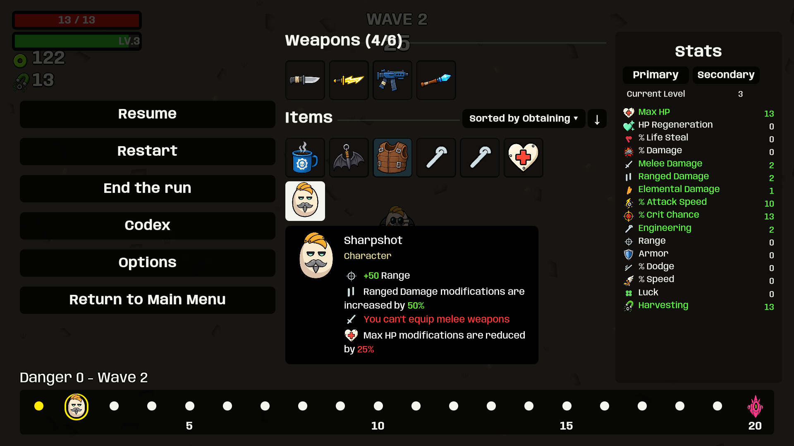

Pause layout



Clean single tier borders without an extra black lip. Darker buttons, backdrop and icon tiles; pause inventory uses six columns and wider controls. Health and XP outlines are now six canvas units thick. Larger effect symbols, white inventory focus, separate focus audio, character ability inspection, common-tier border fixes, face/arrow rewards and wooden crates. Pause includes sorted inventory, Codex, a bottom wave timeline and equally sized HUD bars.
276 regression tests passed in the preceding functional pass; this styling follow-up was rebuilt with zero errors or warnings. All 55 staged screen checks passed. These captures exercise the normal rendering paths with scripted state and focus; they do not certify native pointer input or the subjective audio mix. Click images for full resolution.









